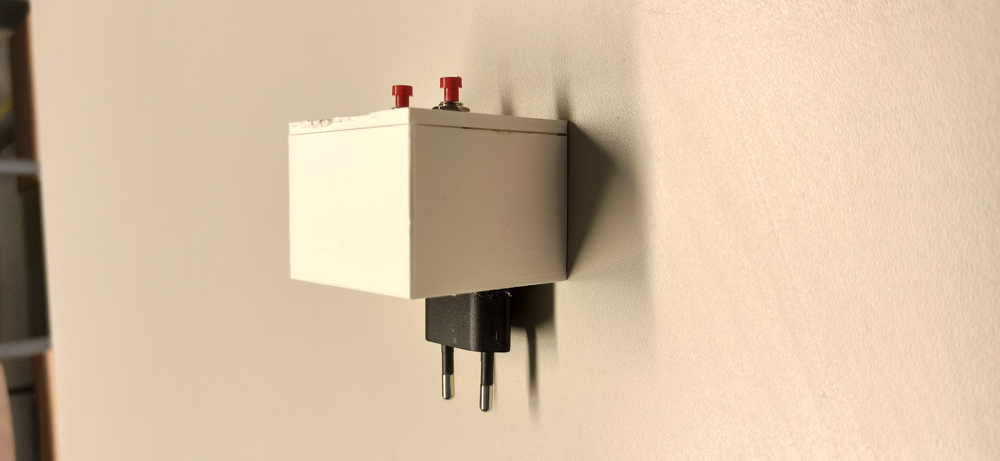
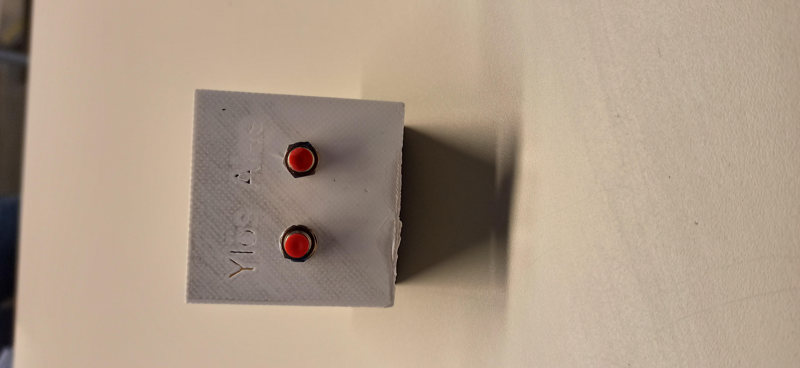
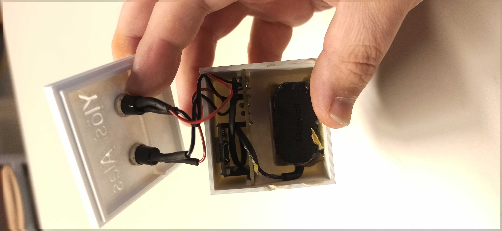
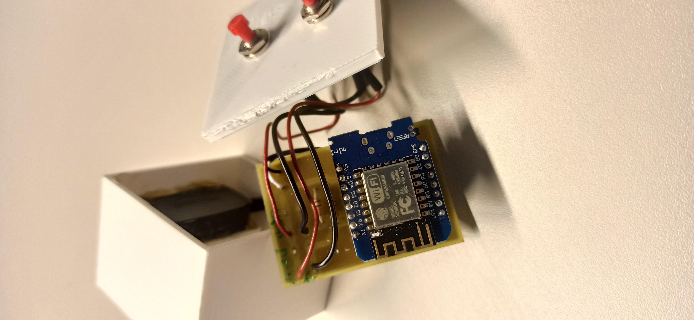
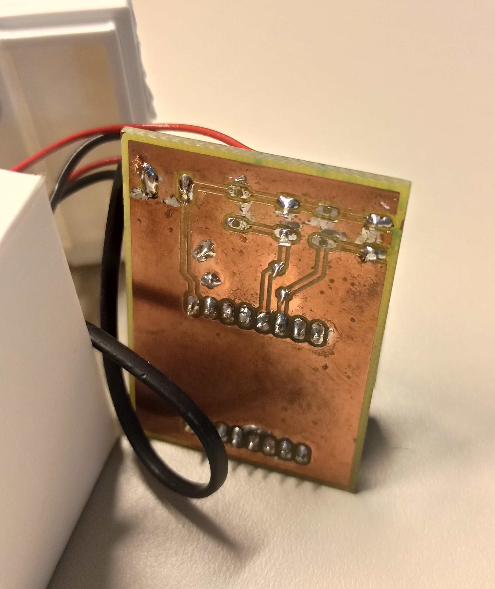
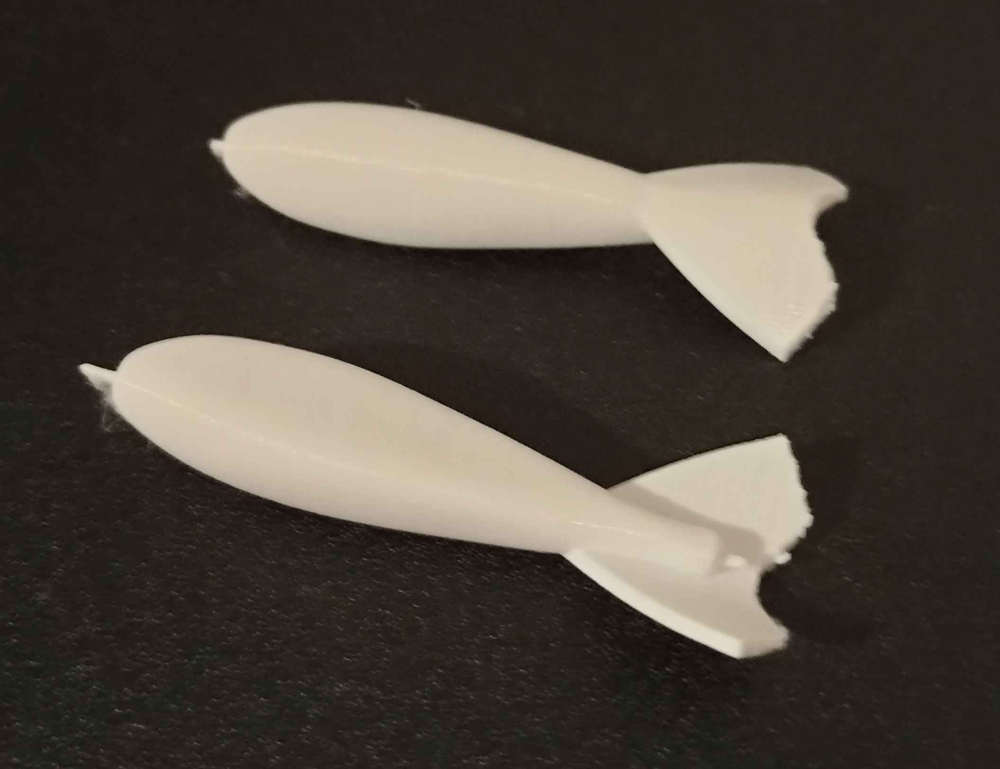

Luova tekeminen.
Nettisivuista vähäsen:
Nämä nettisivut on vartavasten tehty tätä kurssia varten, jotain luovaa. Visuaalisesti en kovin
luova ihminen ole, joten ajattelin, että tällä tavoin voin kuitenkin jotakin luovaa näyttää. Samalla
tulee opeteltua uutta asiaa ja muotoilua, navigointi baria yms. Tekstien asettelusta ja sivuista
ylipäätään voi päätellä ettei ole yhtään semmoista graafista silmää. Siispä oma luovuuteni on
enemmän tuolla ongelman ratkaisussa.
Tässä sivuilla kuitenkin yritän jotain muotoilua tehdä ja yläpalkkia
ja muotoilua. Netistä on kuitenkin kaikki tieto haettu. Luovaa ajattelua tuo myös esille tämä, että mitä
käytän nettisivujen ylläpitämiseen. En mitään maksullista palvelua halunnut käyttää, ja muilla ilmaisilla
nettisivujen hostauksella on aika epäilyttävän oloiset päätteet linkeissä. Joten tämä githubi tuntui
hyvältä vaihtoehdolta. Kuitenkin erittäin moni ohjelmoija käyttää githubia ohjelmoinnin apuvälineenä,
niin tunnettu nettisivu.
Koulun projekti luokkaan OP6-174.
Projekti koostui kahdesta osasta. Ensimmäinen osa oli muokata pöytien vanhaa ylös/alas menoa uuteen systeemiin,
että kaikki pöydät voidaan ohjata yhtäaikaa ylös/alas. Aiemmin piti jokaisen pöydän luona käydä erikseen
ohjaamassa niitä. Ja joissakin pöydissä oli jo rikottu ne kyseiset ns. "alkuperäiset"-ohjaimet. Joten
alkuperäisistä otin rj45-kaapelin irti, labrapöydän sisään pistin esp8266-mikrokontrollerin jonka ohjelmoin
ohjaamaan pöytiä etäyhteyksillä verkon yli. Jokaiseen pöytään tuli tämmöinen mikrokontrolleri ja itse suunniteltu
piirilevy, johon yhdistetään virta ja rj45-kaapeli jolla lähetetään signaali pöydän moottorille että
halutaanko pöytä ylös vai alas. Näistä pöydistä olevista piirilevyistä en saanut kuvaa, sillä pöydät oli
ajettu jo alas.
Toinen osio oli sitten tehdä semmoinen niinsanotusti, noh kutsutaan sitä nyt ohjainkontrolleriksi. Joka
voi ohjata pöydissä olevia mikropiirejä joko yhtäaikaa tai erikseen. Kaikki mikropiirit ovat samassa
WiFi-verkossa, ja sitä kautta ne keskustelevat keskenään. Tämä ohjainkontrolleri, siihen laitoin
kaksi fyysistä nappia, joita painamalla voidaan ohjata pöydät joko ylös tai alas yhtäaikaa. Tai toinen
vaihtoehto on mennä ohjainkontrollerin ylläpitämään nettisivulle ja siellä päättää yksitellen mikä tai
mitkä pöydät halutaan saada ylös tai alas.
Kehitys ideoita tähän jäi, että vaikka ledillä ilmottaisi vihreää jos kaikki pöydät on online tilassa
ja valmiita toimimaan.
Valitettavasti minulla on ainoastaan ohjainkontrollerista valokuvia, mutta videokin sen toiminnasta löytyy.
Kotelo on itse 3D-mallinnettu ja tulostettu koulun tulostimilla.

Kesken suunnittelujen tuli semmoinen toive opettajilta, jos sen palikan saisi suoraan pistorasiaan kiinni, olin jo piirilevyt tehny ja suunnittelin että vain usb johto menisi laitteeseen kiinni, eikä koko pistoketta olisi. Joutui koteloa sitten muokkaa vähän ja ei tullut hienoa.
Tässä olisi pitänyt olla tekstit selvemmin näkysällä. 3D-mallinsin kyllä aukot tohon, mutta tulostimella ei oikein tullut aukkoja. Jotain puukkoa käyttäen olisi saanu aukot esiin.
Yllä olevassa kuvassa sitten näkyy kannen sisältä miltä se näyttää, ja kuinka paljon isompi palikka piti tulostaa kun tuli tämä laturin pistoke tuohon sisään.
Tässä kuvassa sitten näkyy piirilevyn päälyspuoli. Olisi kyllä voinut hieman kompaktimman tehdä.
Tässä näkyy piirilevyn suunnittelujälkeä ja kuinka olen jyrsinyt sen koulun jyrsimellä. Tästäkin näkee, että olisi hieman tiiviimpää voinut tehdä. Tälleen jälkikäteen ajateltuna.
Vähän harmittaa kun ei tullut otettua videota yksittäin ohjaamisesta. Mutta tästä videosta näkee kuinka kaiken pitäisi toimia ohjainkontrollerin napeista.
Extra, kesällä tein vähän tasapainopilkki mallintamista, ajatuksena että tekisin kevennettyjä tasapainopilkkejä itse. Lyijy sydämmellä ja esimerkiksi akryylihartsi pinnotteella. Projekti sitten jäi kun lyijyn käyttäminen ollaan kieltämässä kalastuksessa. Enkä ole vielä keksinyt vaihtoehtoista painavaa ja helposti työstettävää materiaalia kotikonstein jota käyttää pilkkien sydämenä tuomassa painoa. Ohessa on kuva siitä mallinnetusta ja tulostetusta prototyypistä, josta ensiksi oli suunnitelmana tehdä valumuotti.
